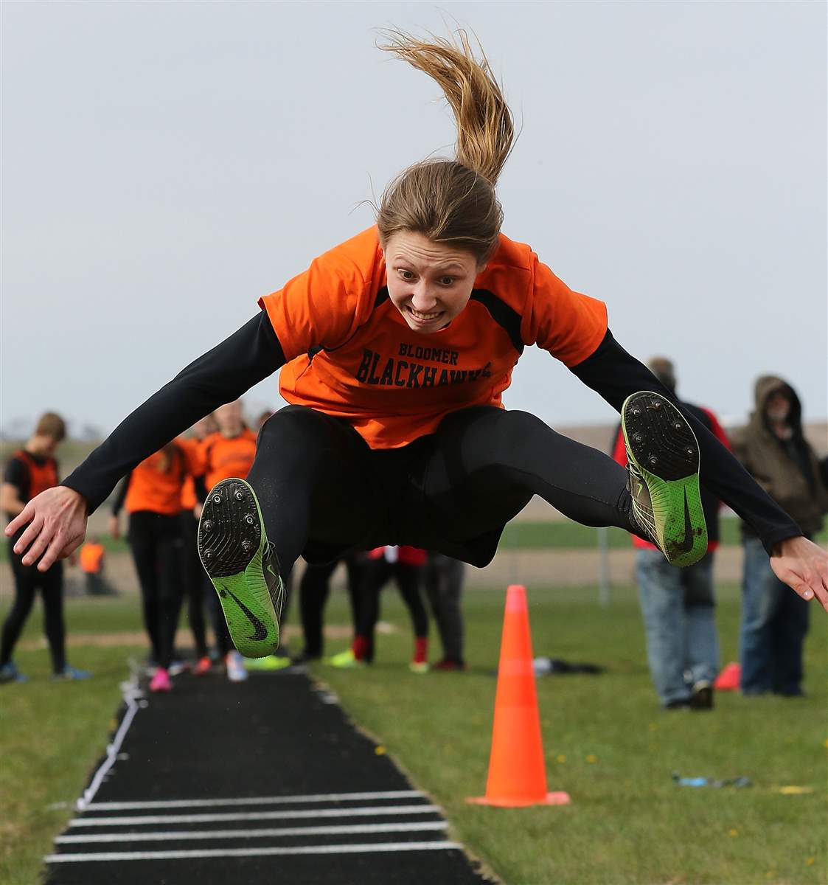
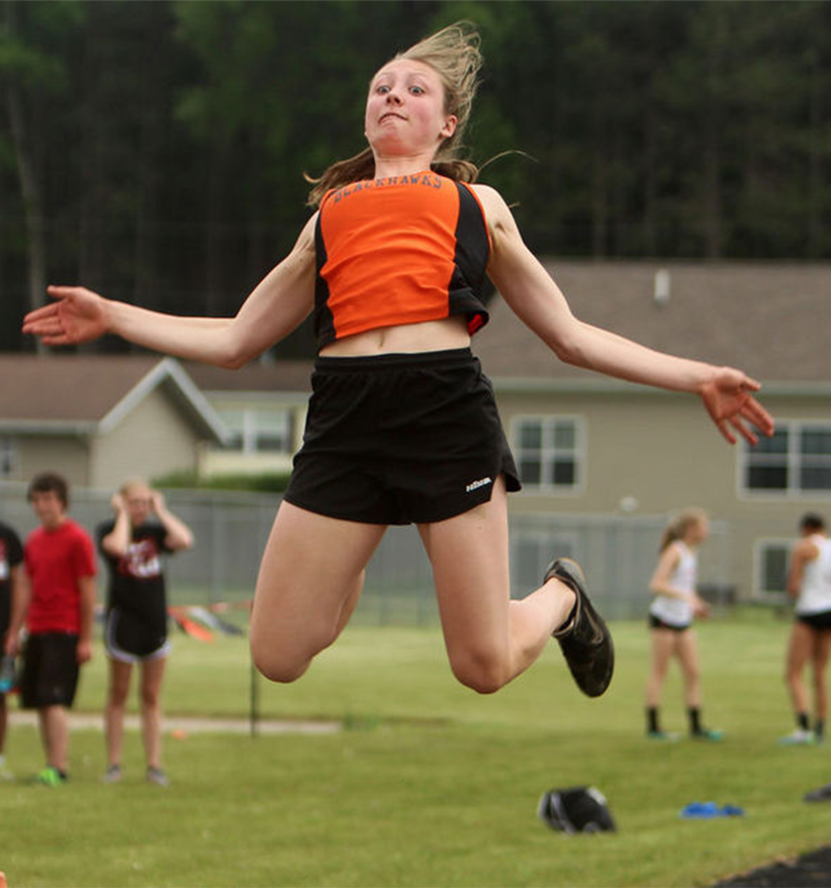

BLOOMER'S ARENDT
CONTINUES RISE UP
STATE
RECORD BOOK
WITH HUGE TRIPLE JUMP
By Nick Erickson
Leader-Telegram
BLOOMER — Nobody would blame Kyra Arendt if she had recently developed a “if it ain’t broke, don’t fix it” frame of mind. After all, the two-time state champion triple jumper has consistently been at least a foot ahead of everyone else in the state all season.
But that’s not who she is. An athlete who scoffs at the word settle, Arendt spent the last week watching film of Olympic triple jumpers when she and her coached noticed something.
“He had me add in this arm swoop thing in my first phase, which has helped my body stay forward for the rest of it instead of getting twisted,” Arendt said.
On her second jump Tuesday at her home meet — the Dave Landgraf Invitational — her arms went through their newly minted motion as she hit the board perfectly and soared through the air.
She landed as the crowd — a fairly large one by jumping pit standards — let out a collective breath of amazement. And then the marker read the distance. Forty feet, 2½ inches.
Arendt is now the owner of the second-best distance in the history of Wisconsin girls prep track and field. She’s just 1½ inches off the all-time record of 40-4 set by Menomonee Falls’ Mikayla Robertson in 2013.
Her assault on history marches on.
“I was pretty shocked,” Arendt said with a humble smile. “I knew it was definitely a good jump.”
Jaw-dropping leaps have themed her spring. She lept the ninth-best jump of all time at an indoor meet at UW-Stout on March 25, going 39-1. She then moved up to sixth at the Heart O’North indoor meet on April 7, going 39-4 at UW-Superior. And now, she’s one of three to ever go over 40.
“After the first meet of the season, me and my coach kind of moved up the goal to hit 40 this year,” Arendt said. “So hitting that is really exciting.”
Right now, the second-best jumper in the state from all divisions is Divine Savior Holy Angels’ Katie Wissing, who has hit a 38-5. Altoona’s Kristi Springer moved to sixth on the list Tuesday as she lept 37-4.
Bloomer won the girls team title Tuesday by over 100 points — scoring 194 to Elk Mound’s 92. Mid-distance phenom Kendall Zeman had another big night, winning both the 400 (1:00.25) and 800 (2:24.56).
Zeman, who placed third at the Division 2 state meet in the 400 last spring, has consistent speed throughout and always seems to find an extra gear down the stretch.
“I guess I just look to get off to a quick block start, try and sprint that first 100 if I can, and then I try and judge and hope that I can start catching up with people toward the 200,” Zeman said. “That’s when you give it your all.”
Altoona’s Mariah Hoepner won the high jump, 100 hurdles and 300 hurdles.
In boys action, Bloomer’s Jarrod Kressin had a breakthrough performance, winning both the 200 (22.95) and 400 (51.49) to give the Blackhawks a clean sweep.
Elk Mound, led by first-place finishes in the 400 relay (45.05) and 800 relay (1:35.43), was the runner-up.